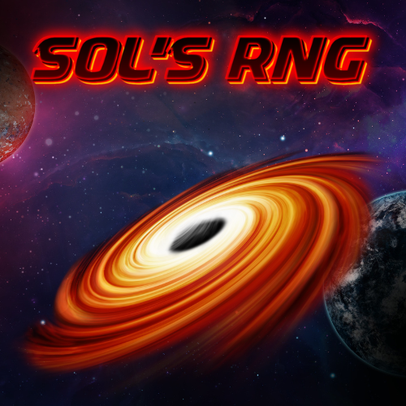

Sol's RNG
Vítej v Sol's RNG
Jedna z nejpopulárnějších RNG her na světě.
Nejvzácnější aury
Nejvzácnější aury jsou většinou aury který mají šanci na padnutí 1 ku 100 milionům a více.
Zde jsou nějaký ukázky:
Abyssal Hunter
Archangel
Gargantua


Systém této hry
Tato hra funguje na bázi šance kde člověk kliká [Roll] tlačítko a dostává určité aury
Můžeš získat od klasických aur jako Common (1 ku 2), Uncommon (1 ku 4) po aury jako třeba Archangel (1 ku 250 000 000)
Každá aura ma nějaký určitý vstup do hráčovo obrazovky (cutscene) kde ho to upozorní že tu danou auru dostal.
Čím je aura vzácnější, tím zajímavější je cutscene dané aury.
Jsou různý "cutscenes" od toho že se ti postupně prolne obrazovka určitou barvou, nebo uvidíš čtyřhvěždici/osmihvězdici (záleží podle vzácnosti)
Aury který mají (1 ku 99 999 999) a výše, tak mají custom cutscenes s různýma symbolama atd.
Zde jsou ukázky:


Biomy
V této hře jsou různé biomy které ovlivňují šance některých aur.
Například kdyby byl Rainy biome, člověk má větší šanci na získání aury jako je Abyssal Hunter nebo Sailor
(Abyssal Hunter): Z šance 1 ku 400 000 000 je to šance 1 ku 100 000 000
Každý biome je tam pouze na určitý čas a poté se změní na jiný biome
To, na jaký biome se to změní se zase určuje podle šance na změnění biomu
Nejvíc vzácný biome je Glitched Biome se šancí 1 ku 30 000 s každou změnou biomu
Zde jsou ukázky biomů:
Starfall
Rainy
Glitched
1 ku 7500
1 ku 750
1 ku 30 000


Hell
Corruption
Null
1 ku 6666
1 ku 9000
1 ku 13333/s